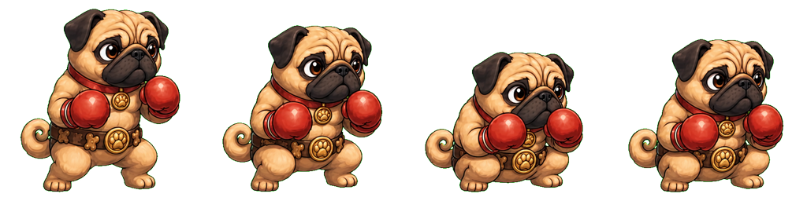

PASS: source-only crouch and jump rows accepted for T032.
Exact 1024x256 alpha spritesheet. Two-legged low guard, compact belly, stable gloves, muzzle, ears, belt, tail, palette, and silhouette.

Exact 1536x256 alpha spritesheet. Small vertical hop with tucked knees, no stretched limbs, and stable Pickles identity.

No public/assets/generated/fighters/pugilist-pug folder is introduced; Pickles remains non-playable.